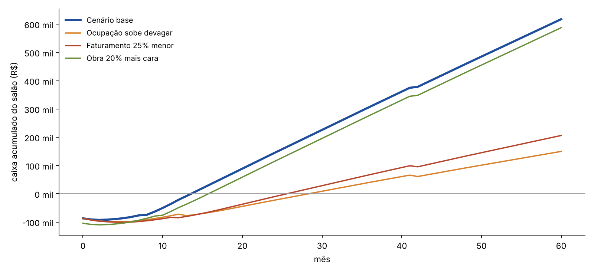

Vale a pena? Onde, quanto custa, quanto rende, o que pode dar errado e como começar sem colocar o seu emprego em risco.
| Quem | Fica com a profissional |
|---|---|
| Cabeleireira âncora | 55% até R$ 10 mil/mês · 60% até R$ 15 mil · 65% acima |
| Outras cabeleireiras e estética | 50% |
| Manicure | 50% |
| Mercado real (vagas de out/2026): manicure em Flamengo recebe 40%; cabeleireira em Copacabana, 50%. A nossa escada paga mais para atrair quem já tem clientes. | |
| Sala real (anúncio de nov/2026) | m² | Custo/mês | |
|---|---|---|---|
| T2 · Barão de Mesquita, perto do Shopping Tijuca · já montada como salão | 60 | R$ 3.900 + cond./IPTU | 1ª opção |
| T1 · Rua Afonso Pena 101, a pé do metrô | 62 | R$ 4.288 | base do estudo |
| T7 · Barão de Mesquita, 2 ambientes | 65 | ~R$ 4.200 | visitar |
| Copacabana · Siqueira Campos | 76 | R$ 9.542 | fora |
Lemos todos os anúncios comerciais de 45–110 m² em Copacabana: nenhum de 60–85 m² sai por menos de ~R$ 8 mil/mês.
Para faturar o planejado, o salão precisa de 2,8% a 5,3% do que esse público já gasta com cabelo e unhas, sem contar quem trabalha ou passa pelo bairro.
| Item | Plano | Realista |
|---|---|---|
| Obra e adequação | 20.000 | 25.000 |
| Móveis e equipamentos | 28.000 | ~37.000 |
| Licenças, projeto, homologação | 4.000 | 4.000 |
| Marca, fotos e lançamento | 4.000 | 4.000 |
| Estoque inicial | 6.000 | 6.000 |
| Garantia do aluguel, custos antes de abrir, reserva | 12.000 | 11.000 |
| Montagem | 74.000 | 87.000 |
Empréstimo do Thomás de R$ 120 mil a CDI. 15 meses sem pagar, depois 45 parcelas de ~R$ 3.961. Ele fica fora do contrato social.

Inclui: sua retirada de R$ 5 mil a partir do mês 13, recepcionista fixa desde o início, aluguel subindo 5% ao ano acima da inflação, reposição de equipamentos no mês 42. Não inclui venda do negócio no fim.
| Cenário | Retorno 5 anos | Se paga em |
|---|---|---|
| Base | 180% a.a. | 14 meses |
| Obra 20% mais cara | 143% a.a. | 16 meses |
| Sem aumento de preço | 146% a.a. | 16 meses |
| Faturamento 25% menor | 62% a.a. | 26 meses |
| Ocupação sobe devagar | 50% a.a. | 29 meses |
| Tudo isso junto | prejuízo | não paga |
Se cada cabeleireira faturar menos de ~R$ 8,7 mil/mês (o plano conta com R$ 12 mil), o salão deixa de compensar o risco.
Se no mês 6 o caixa estiver em −R$ 95 mil e o mês der prejuízo, paramos. No pior caso, a perda do empréstimo fica em ~R$ 130 mil, menos a revenda dos equipamentos.
Você continua na Taco. O salão abre com recepcionista fixa (R$ 2.913/mês) e uma âncora como coordenadora. Você cuida de CRM, agenda, marketing e números à noite e no sábado.
Só com 3 meses seguidos de lucro e ocupação acima de ~70%, por volta do mês 10–12. Aí passa a retirar R$ 5 mil, o que ganha hoje.
Abrir só com 6 a 12 meses dos seus gastos pessoais guardados, fora do caixa do salão. Sem essa reserva, não abrir.
E ainda: nada no seu nome pessoal. Aluguel com seguro-fiança (sem fiador) e empréstimo sem aval seu. A dívida fica na empresa.
Mantendo a Taco no primeiro ano, o retorno é o mesmo (180% a.a.) e o seu risco de ficar sem renda some.
| Tema | Decisão |
|---|---|
| Região e sala | Tijuca. Visitar T2, T1 e T7. T2 é a preferida se condomínio + IPTU ≤ R$ 800 |
| Seu emprego | Fica na Taco até o salão dar 3 meses de lucro; depois R$ 5 mil/mês de retirada |
| Contrato com as parceiras | Escada da âncora 55/60/65%; demais 50%; taxa do cartão e produto de química descontados antes da divisão |
| Equipamentos | Novos: cadeiras, lavatórios, autoclave, ar (~60 mil BTU). Usados: carrinhos, recepção, espera |
| Maquininha e sistema | InfinitePay (~1,5–2,1%, D+1, PIX grátis); Trinks ou Avec |
| Dinheiro | Empréstimo do Thomás, R$ 120 mil a CDI, 15 meses sem pagar |
| Condição para assinar | 2 âncoras comprovadas + obra até R$ 30 mil + sala até R$ 4,5 mil |
| Quando | O quê | Quem |
|---|---|---|
| nov–dez/2026 | Abordar ~40 profissionais e conversar com ~10; pedir os extratos | Manon |
| nov/2026 | Preço de 10–15 salões do bairro por WhatsApp; questionário com 50 clientes | Manon |
| nov/2026 | Condomínio/IPTU de T2 e T7; visitar as 3 salas; conta de luz; 3 contadores | Thomás |
| com 2 âncoras | 3 orçamentos de obra na sala escolhida; fechar o estudo com os números reais | Thomás + analista |
| até fev/2027 | Go/no-go: 2 âncoras + obra ≤ R$ 30 mil + sala ≤ R$ 4,5 mil | Manon e Thomás |
| ~3 meses depois | Empresa, aluguel (5 anos, carência), contratos homologados, obra, licenças, abertura | todos |
A Taco permite você tocar o salão à noite e no sábado durante o primeiro ano?
Você topa passar dezembro e janeiro abordando profissionais até achar as 2 âncoras?
Se as âncoras não aparecerem até fevereiro, combinamos de não abrir?
Com três "sim", o salão é um bom negócio com risco controlado: no pior caso, você mantém o emprego e o investimento tem regra de parada.